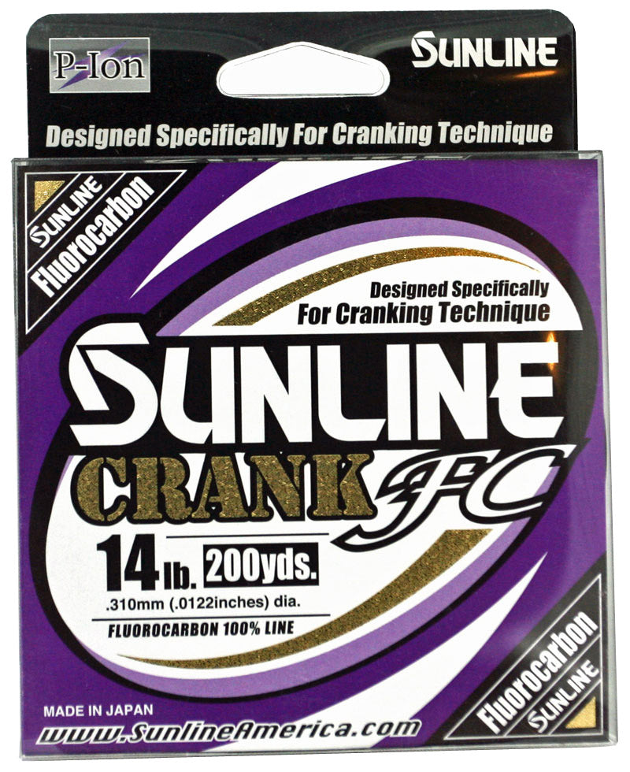

Sunline Crank FC Fluorocarbon
Diameter chart, reel capacity & backing guide

Crank FC is Sunline's reaction-bait fluorocarbon, designed with additional stretch for crankbaits and related moving lures. The US range has five strengths from 8 to 16 lb, each in 200- and 660-yard packages. It is a different formulation from FC Sniper, not a crankbait label applied to the same chart.
- Construction
- 100% fluorocarbon; Plasma Rise surface treatment
- Listed strengths
- 8-16 lb
- Line type
- Fluorocarbon main line
Is Crank FC right for your setup?
Consider Crank FC when fluorocarbon suits your crankbait, jerkbait, or other reaction-lure setup. Its intended cushioning is a design claim, not a measured stretch result here. Diameter and usable casting reserve still matter when selecting a strength for a particular reel.
How much Crank FC will fit?
Calculated estimates, not measured fills. Stop at the reel manufacturer's fill level even if some line remains.
Sunline Crank FC diameter chart
US Crank FC diameter chart visually checked. Both inch and metric values are manufacturer-published. Exact assigned variants verify 200 and 660 yards.
| Strength | Inches | mm | Spools (yd) |
|---|---|---|---|
| 0.0093 | 0.235 | 200, 660 | |
| 0.0102 | 0.260 | 200, 660 | |
| 0.0112 | 0.285 | 200, 660 | |
| 0.0122 | 0.310 | 200, 660 | |
| 0.013 | 0.330 | 200, 660 |
Choosing your Crank FC strength
The 10 lb entry is .260 mm; 14 lb is .310 mm. Recalculate the fill when moving between them instead of assuming the extra four pounds leave capacity unchanged.
This is an 8-16 lb range. A heavier lure or cover requirement outside that range calls for a different verified line, not an invented Crank FC strength.
The 8 lb option at .235 mm can conserve spool space, but this calculator does not predict crankbait running depth or whether a chosen rod and lure can tolerate that strength.
Specification-based guidance, not a hands-on Crank FC test. Capacity results are estimates, not measured fills.
Want a guided recommendation?
Continue in the Setup WizardSame pound test, different diameters
At your selected strength
Loading diameter comparisons...
What changes with another line?
Nearby diameters in the line database
| Line | Strength | Inches | Difference |
|---|---|---|---|
| Loading line database... | |||
Backing, working line & leaders
Filler or bulk
All five verified strengths offer 200 and 660 yards. A 660-yard package is a bulk supply, not an instruction to fill a reel with all of it.
Keep casting reserve
For repeated long casts, allow for trimmed and retied sections when choosing a working length over backing. Replenish the working section before the connection enters ordinary casts.
Check the product name
Crank FC, FC Sniper, and Dostrike FC have different product identities. Use the diameter for the exact line being wound.
How Much Fits on These Reels?
Estimated full-spool capacity for the Crank FC strength selected above, with no backing. These are calculated examples, not physical tests or recommendations for every pairing.
Loading capacity estimates...
Crank FC questions, answered
Is Crank FC nylon?
No. Sunline identifies it as 100% fluorocarbon. The additional-stretch positioning does not change its material.
Does this chart cover only 10, 12, and 14 lb?
No. The current manufacturer chart also verifies 8 and 16 lb, and both package lengths are listed for every strength.
Will a thinner strength make my crankbait dive farther?
This page calculates spool capacity, not lure depth. Lure design, cast length, retrieve, and tackle choices also affect the presentation.
Specifications & sources
Checked 2026-09-13 against the current Sunline America product response and its linked diameter image. No FC Sniper diameters substituted. Product imagery identifies Crank FC, not every selectable strength.
Calculations use the catalog's listed inch diameters. Published inch and millimeter values may differ slightly because of rounding.
- Sunline official product evidence 1 Exact model identity and manufacturer specifications; reviewed 2026-09-13.
- Sunline official product evidence 2 Supporting specification, package or chart evidence; see source note for scope.
- Sunline official product evidence 3 Supporting specification, package or chart evidence; see source note for scope.